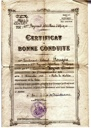

Genealogie_Complete

Graphique personnel
Parents
| Père | Date de naissance | Mère | Date de naissance |
|---|---|---|---|
 Louis Antoine VERRIER Louis Antoine VERRIER |
19 mai 1873 |  Louise Thérese BILLION Louise Thérese BILLION |
15 oct. 1871 |
Conjoints
| Conjoint | Date de naissance | Enfants |
|---|---|---|
| Sonia Jeanne BLONDEAU (VEYRIER) |
07 avr. 1916 | Danièle VEYRIER (LÉVY-VEYRIER)Nicole VEYRIERPascale VEYRIER |
Événements personnels
| Type d’événement | Date | Lieu | Description |
|---|---|---|---|
 Naissance Naissance |
07 nov. 1905 | Roche-la-Molière, Loire, Rhône-Alpes, FRANCE | |
| Mariage |
28 avr. 1934 | Paris 04, Ile-de-France, FRANCE | |
| Mobilisation 2nde Guerre Mondiale |
09/1939 | ||
| Fin Mobilisation 2nde Guerre Mondiale |
09/1940 | ||
| Profession |
conducteur de travaux des Etablissements Bernard | ||
| Décès |
28 déc. 1968 | Nice, Alpes-Maritimes, Provence-Alpes-Côte d'Azur, FRANCE |
Notes
| Aimé réside dans le Pas-de-Calais et part faire son service militaire au Maroc entre 1925 et 1926. Il prend le bateau Le Jean Bart pour se rendre de Marseille à Alger puis à Oujda à la frontière du Maroc. |
| Aimé et Sonia se marient en 1934 et habitent 17 rue du Commerce (selon son livret militaire) |
| Aimé indique la restauration de 4 monuments gothiques et du Magasin Aubrun à Bourges lorsqu’il était conducteur de travaux des Etablissements Bernard. [1] Restauration de 4 monuments historiques Années Monuments 1929 1930 Grand Séminaire "Couvent des Ursulines" 1933 1934 Palais Jacques-Coeur Cheminée Salle des Festins 1933 1933 1934 Hôtel des Echevins (ou "Petit Lycée") 1933 1934 Hôtel Lallemand JPG - 185.7 ko Bourges Couvent des Ursulines Grand Séminaire JPG - 30.4 ko Bourges Hotel des Echevins Le Petit Lycée JPG - 113.6 ko Bourges Hotel Lallemant Les Archives Départementales de Bourges détiennent 1 lettre datée de 2/1933 des Etablissements Bernard signée par Aimé indiquant que les travaux de rénovation de la Grande cheminée de la Grande salle de l’Entresol sont terminés. Un calepin d’appareil (croquis ?) y était joint (introuvable pour l’instant). JPG - 58.2 ko Pal J. Coeur Cheminée Festin restaurée par Aimé JPG - 86.4 ko Pal. J. Coeur lettre Aimé 1933 Construction du Grand Magasin Aubrun 1828-29 Ce Magasin est construit en 1928-29 (10 rue Moyenne) sous la direction de l’Architecte Sylvère Laville. Il est inscrit aux Monuments Historiques (façades et toitures) en 2/2005 JPG - 20.8 ko Bourges Chantier Aubrun 1929 JPG - 11 ko Bourges Magasins Aubrun aujourd’hui - La Ville de Bourges Elle est située à quelques kilomètres du « centre exact de la France ». Bourges fait partie des 4 « Villes rouges » (Bourges, Autun, Lyon, Le Mans) , villes conservant un riche patrimoine architecturale du 1er au 3ème siècle dont les édifices sont construits en pierre rouge, de moellons scellés à la chaux, décorés de motifs géométriques en brique polychromes. A Bourges il reste une muraille de cette époque. Bourges dans l’Antiquité, se nommait Avaricum , le nom celte étant Avaric qui se retrouve aussi dans le nom de la rivière Yèvre qui traverse la ville. Elle était la capitale du peuple gaulois « les Bituriges Cubes » d’où elle tire son nom actuel. |
| Aimé, quant à lui intervient comme Conducteur de travaux (Entreprise Bernard à Bourges) dans la construction d’immeubles à Chartres et Paris. Années Villes Constructions Entreprises 1930 Chartres Siège Cie Assurance "Les Travailleurs Français" Ent. Bernard Bourges 1931-32 Paris 8e Immeuble de rapport angle rue Goujon Av Fr Roosevelt Ent. Bernard Bourges JPG - 62 ko Chartres Immeuble "Travailleurs Français" 18 bld Chasles JPG - 36.7 ko Paris 8e Immeuble angle rue Goujon Av Fr Roosevelt JPG - 27.1 ko Paris 8e Immeuble angle Goujon Roosevelt (de face) Aimé Veyrier et sa femme Sonia Blondeau se marient à Paris en 4/1934. Aimé s’est fait domicilier chez la belle-sœur de Jean Veyrier dans le 4ème pour la circonstance. - Retour à Bourges (1938-1940) Le chômage qui sévit dans les années 1938-39 oblige Aimé, Jean et leur famille à revenir à Bourges pour travailler à la Société de Construction Aéronautique- Aéroport. (Aimé comme dessinateur). Aimé (34 ans) est mobilisé en 9/39 pour un an ("drôle de guerre") et démobilisé à Pau en 9/40. Jean (33 ans) est mobilisé et part à Beyrouth. Après le bombardement de l’aéroport de Bourges (5 et 6 juin 1940), Sonia, Renée (leurs femmes) décident de partir vers la zone libre ("Exode" de 10 millions de français). Elles confient leurs enfants (Nicole 2 ans et Bernard 11 ans) au bon soin des grands-parents Louis et Louise Verrier qui résident à Chinon chez leur fils Paul. Ces derniers seront obligés de se cacher dans les sous-sols du Château de Chinon au moment du bombardement de la ville. |
| Début 1940 : Aimé, Jean et leur famille les rejoignent et habitent rue des Cordeliers sur 2 étages. Je nais en 1945. En 1946 mes parents louent une grande maison rue de Paris dans laquelle naît ma sœur Pascale en 1952. Pendant l’occupation allemande, Albert fait de la résistance et cache des anglais dans sa cave. Après la guerre, débute la période de reconstruction des villes détruites en France. Aimé crée son entreprise de Bâtiment en commençant par faire des métrés, et pour cela il s’associe avec son frère Jean en 5/1944. Puis ils construisent des logements en pierre de taille de "Savonnières" des carrières Civet-Pommier à partir de 1945 en collaboration avec le MRU [1] 1945 : à Arcis-sur-Aube 9 "baraquements provisoires à "Sapinville" JPG - 45.6 ko Arcis sur Aube 39 rue Gal Sarrail JPG - 47.1 ko Arcis sur Aube 30 Rte Nozay 43 Gal Sarrail 1945-46 : à Arcis-sur-Aube 11 logements rue des Cordeliers et rue st Rémy JPG - 59.8 ko Arcis sur Aube Rue St Remy JPG - 58.6 ko Arcis sur Aube Rue St Remy Angle Cordeliers 1947-49 : à Troyes 6 bâtiments en pierre de taille rue du 1er Mai JPG - 28.6 ko Troyes Immeubles Av. du 1er Mai En 11/1948, Louis le dernier patriarche décède. Vers 1948-49, l’association entre Jean et Aimé ne fonctionne plus, ils se séparent vers 1949. Aimé crée seul, une entreprise individuelle de Maçonnerie spécialisée dans la construction de maisons en pierre de taille et réalise des chantiers en Ile de France. En 1954 Mes parents (Aimé et Sonia) et mes sœurs, quittons Arcis-sur-Aube pour nous installer à Noisy-le-Sec dans une maison en pierre de taille construite par mon père. |
| 9b. Le parcours d’Aimé, le dernier tailleur (1948-1967) Vers Précédent 9a. Vers 1950 : Les Tailleurs se dispersent Après la 2ème guerre mondiale, Aimé Veyrier installé à Arcis-sur-Aube, reprend le flambeau de son père, le dernier patriarche et va réaliser son propre parcours de constructeur de pierre de taille en association avec son frère Jean. A partir de 1948-49, date à laquelle Aimé et Jean se séparent, Aimé crée sa propre entreprise de Bâtiment (spécialisée en pierre de taille) où il intervient aussi bien comme "Entreprise Générale", "Sous traitant" ou "Entreprise pilote". Il réalise la plupart du temps les plans des constructions. Dans le cadre de la reconstruction avec le MRU [1] il construit en 1948 un "pavillon prototype" dans la "Cité expérimentale Merlan" à Noisy le Sec (93) pour se faire connaître dans la région parisienne. Cette cité, ainsi que les pavillons seront inscrits aux Monuments Historiques le 28/12/2000 Années Villes (Dépt) Constructions 1948 Noisy-le-Sec (93) Cité expérimentale "Maison Veyrier" MH 2000 JPG - 25.5 ko Noisy le Sec Maison VEYRIER Plan JPG - 100.9 ko "Maison Veyrier" Noisy le sec Entre 1949 et 1954 il réalise des constructions diverses "entre deux chantiers" en Ile de France (Paris, Val d’Oise/95, Seine-St-Denis/93), et dans la Marne (51) Années Villes (Dépt) Constructions 1949-50 Paris 8e Immeuble (6 étages) 29 rue d’Anjou 1949-50 St Ouen l’Aumône (95) Centre Commercial 1950-51 Châlons-en-Champagne (51) Clinique 1951 St Martin d’Ablois (51) Rénovation extérieure Château 1953-54 Le Raincy (93) Immeuble (2 étages) 17 allée Clemencet (Sécu) JPG - 11.9 ko Paris 8e 29 Rue d’Anjou JPG - 31.6 ko St Martin d\’Ablois Château JPG - 36.8 ko Le Raincy 17 allee Clemencet (Immeuble Secu) En 1953/54 il construit un pavillon à Noisy le Sec et s’y installe avec sa famille. Entre 1951 et 1967, il construit des lotissements (pavillonnaires ou d’immeubles) avec la SEMICLE [2] essentiellement dans la partie de l’ancienne Seine et Oise devenue Val d’Oise (95), Val de Marne (94), Essonne (91) et Seine st Denis (93), puis à Beauvais Années Villes (Dépt) Constructions 1951-53 Noisy-le-Sec (91) 41 pavillons rue du Pressoir [3] 1955 Ste Geneviève des Bois (91) 45 pavillons cité A Briand 1956-58 Montmagny (95) 73 pavillons Rue Bel Air 1959-60 Suresnes (92) Pavillon F5 - 3 Rue de la Terrasse 1961-62 Villeneuve St Georges (94) 3 Immeubles rue Bois Matar 1962-67 Beauvais (60) 3 immeubles et environ 100 pavillons rue Villebois Mareuil JPG - 38.6 ko Noisy le sec Rue du Pressoir JPG - 32.2 ko Ste Genevieve des Bois rue Mourgeron et Rossignol JPG - 33.9 ko Montmagny rue Bel Air JPG - 85.5 ko Suresnes 3 rue de la Terrasse |
Sources
| Description | Référence/Commentaire | Qualité | Information | Preuve |
|---|---|---|---|---|
| http://levy.veyrier.daniele.free.fr/spip.php?article16 |
Je ne sais pas | Je ne sais pas | Je ne sais pas | |
| http://levy.veyrier.daniele.free.fr/spip.php?article16 |
Je ne sais pas | Je ne sais pas | Je ne sais pas | |
| http://levy.veyrier.daniele.free.fr/spip.php?article16 |
Je ne sais pas | Je ne sais pas | Je ne sais pas |